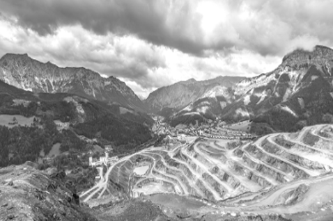
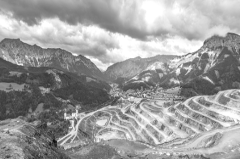

-
CAPAZ: The Passport to Markets Programme. Scaling-up and Sustaining Impacts
marketProgramme
southAmMap
Summary of the project
This project corresponds to the second phase of the development and operationalization of the “Code of Risk-mitigation for Artisanal and small-scale mining engaging in Formal Trade” (CRAFT), with two primary objectives: 1) Strengthen the improvement process of organizational, social and mining practices of miners involved in project phase I, and support their transition into viable artisanal entrepreneurial models consistently selling into legal supply chains, while scaling-up legal supply chains in Colombia. 2) Implement a sustainability roadmap to operationalize CRAFT, including a second round of multi-stakeholder consultation and the piloting of a multi-stakeholder Impact Exchange Platform.
Envisioned impact
The CRAFT approach seeks to incentivize better environmental and social practice and support economic development in ASM communities by enabling their access to OECD-conformant supply chains. In the long term, the adoption of better practices and access to fairer market conditions is expected to improve the living conditions of the ASM communities, as well as contribute to the stability in conflict-affected regions.
“The second phase of the CAPAZ project is an opportunity for consolidating wider impacts in the most vulnerable groups of miners to be able to connect with legal markets and improve their quality of live in post- conflict areas in Colombia” Natalia Uribe, project leader.
Beneficiary groups
Artisanal and Small-scale miners, supply chain actors and civil society stakeholders.
"We have to be united. We always think about doing things for ourselves, but if we work like that we won't get anywhere. We have to join forces and work in partnership in order to improve the situation for everyone. We have learned this lesson from the training given by ARM" Senides Lucumi Mina, mineral selector from Suárez, Cauca, Colombia.
Intervantion territory
Latin America / Colombia / Departments of Antioquia, Nariño & one more department to de defined after carrying out a baseline assessment.
Implementing partners
Alliance for Responsible Mining (ARM)
RESOLVETime-frame
2 years: June 2018 - May 2020Mineral
GoldPhoto credit: ARM
-
Incident Reporting and Monitoring Gold in DRC
IncidentReporting
africaMap
Advancing incident reporting and community participation in responsible sourcing through cooperative and CSO capacity enhancement in Eastern DR Congo’s gold sector
Summary of the project
The principle aims of this project are threefold:
To enhance the capacity and legitimacy of cooperatives operating in eastern DRC’s mining sector, whilst sensitising them to the benefits of responsible sourcing;
To establish an accessible incident reporting and monitoring mechanism fed by these cooperatives, together with local CSOs and mining authorities to increase transparency concerning mine site and supply route incidents at and around gold sites;
To use this mechanism to enhance transparency around incident follow-up in cooperation with cooperatives, local CSOs, mining authorities and other local and national stakeholders.
Envisioned impact
IPIS and CEGEMI aim at:
Enhancing capacity and legitimacy of cooperatives through
Training on due diligence standards, good governance, financial management, access to credit, and conflict resolution/mediation,
Building the capacity of miners to operate collectively through cooperative structures.
Establishing a reporting system for incidents on artisanal gold supply chains, including the geolocalisation of incidents reports on a publically available webmap via
Training on incident identification and risk mitigation, verification and reporting of credible incidents,
Building the capacity of cooperatives and NGOs to identify, investigate and monitor incidents
Beneficiary groups
Participating miners, cooperatives and civil society actors will benefit from this project directly through capacity enhancement. Mining communities, traders and companies, including women working in the sector, will benefit from the better enfranchisement of miners as well as increased security and avenues for recourse when incidents arise.
"We all like to participate in the training program that you organise for us, this will allow us this time to organise ourselves well as a cooperative." - A miner in Nyamurhale gold site, a site that was prospected as a potential area for the deployment of project activities
Intervantion territory: Democratic Republic of Congo, South Kivu and Ituri
Implementing partners
International Peace Information Service - IPIS is an independent research institute providing tailored information, analysis and capacity enhancement. IPIS is a leader in research on natural resources in Sub-saharan Africa and has been working on artisanal mining for several years.
Centre d'Expertise en Gestion Minière - CEGEMI is a Bukavu-based research institute of Congolese Academic researchers, created in the context of a VLIR-UOS institutional cooperation project between Flemish universities and the Catholic University of Bukavu.
Time-frame
The project will run from January 2018 to December 2019.
Mineral
GoldPhoto credit: Gabriel Kamundala Byemba, CEGEMI - 2018
-
Responsible Kenyan Gold
ResponsibleKenyan
africaMap
Summary of the project
The Responsible Kenyan Gold project seeks to improve working conditions and incomes for miners by providing mine sites from Kakamega and Migori Counties with access to finance, technical trainings and markets. Finance will be opened up to enable groups to invest in enhanced, cleaner extractive and processing equipment, reducing reliance on mercury and increasing recovery of gold. Technical trainings will focus on formalization and responsible production and, finally, a route to market will be pioneered for responsibly mined gold to reach export markets. These tools combined will enabled groups to continuously improve their ESG performance to align with pre-existing market performance frameworks, including Fairtrade certification.
Envisioned impact
Increased income for small scale gold miners
Improved working conditions for small scale gold miners
Improved route to market channels for responsibly mined gold.
Increased awareness of Kenya as an origin for responsibly mined gold and increased county government support for ASM sector
Beneficiary groups
10 x Artisanal mining groups (5 x Migori County, 5 x Kakamega County)
“The Responsible Kenyan Gold project is an exciting scale up of Fairtrade’s investment-led approach with mining communities in East Africa. We look forward to forging new partnerships with NCCK and GROOTs to reach more mine sites in East Africa and, on the market side, raise the profile of Kenya as an origin for responsibly mined gold.” - Gonzaga Mungai, Fairtrade Africa
Intervantion territory: Kenya (Migori and Kakamega Counties)
Implementing partners
Fairtrade Africa The Dragonfly Initiative
GROOTS Kenya
The National Council of Churches of Kenya (NCCK)Time-frame
January 2018 until December 2020Mineral
Gold -
The CAPAZ Passports to Markets project
CAPAZpassports
southAmMap
Summary of the project
This project has two primary objectives:
To develop a globally applicable Market Entry Standard to engage with artisanal and small-scale gold mining, especially in conflict-affected and high risk areas.
This standard will bring together global stakeholders to develop the first version of the CRAFT Standard.
The Standard will be developed under Open Source licence, so that stakeholders may freely use it as an "ASM module" in their own sourcing or certification systems.
This Standard aims to have a global scope, in conflict and high risk areas and beyond. In this first stage, the standard will be tested in Colombia, bringing together importers, traders and three pilot mining sites to build transparent and OECD-conformant supply chains.
To pilot supply chain models for conflict-free minerals in Colombia.
Identification and evaluation of mining sites to test the CAPAZ approach.
Empowerment of miners to establish legal supply chains, build tailor-made progressive improvement plans and develop a route of positive changes.
Cost-effective and participatory due diligence process. Engagement with the national, regional and local institutions to boost formalization efforts and raise awareness on conflict-free minerals regulations.
A business case and an incentives model will be developed by supply chain actors participating in the pilots.
Gold from the pilot sites will be delivered through a transparent, OECD-conformant supply chain.
Environmental, economic and social improvements will be measured through a set of simple key performance
Envisioned impact
The Alliance for Responsible Mining (ARM) and RESOLVE are developing a Market Entry Standard (called CRAFT) to provide an entry point for artisanal and small-scale mining organizations toward further opportunity, improved performance and a contribution to better life conditions of their communities.
The CRAFT Standard has the potential to create opportunities for hundreds of thousands of miners in developing countries. With the development of a pathway for ASM gold to enter formal markets, new allies and donors from the private and public sectors are invited to join CAPAZ to widen the impact and support scaling up and implementing a system which is sustainable for miners and international markets.
Beneficiary groups
Mining organizations, artisanal and small-scale miners and communities
Domestic traders and exporters
International refiners
Companies and brands working with gold
Intervantion territory: Colombia, La Llanada, Suárez
Implementing partners
Alliance for Responsible Mining (ARM)
RESOLVETime-frame
The project will run from February 2017 to June 2018Mineral
GoldMore information can be found on this website
Photo credit: ARM
-
Indonesia Tin Working Group
Indonesia
indonesiaMap
Summary of the project
Launched in 2014, the TWG works with downstream companies, midstream processors, local tin producers, civil society, industry associations, and the central and regional Indonesian government. Through the TWG, companies are contributing to the development of responsible tin mining in Indonesia via direct engagement with government and local stakeholders, providing support to their supply chain partners, and setting supply chain expectations for responsibly produced tin.
Phase I (2014-2017) was led by the Sustainable Trade Initiative IDH as the international convener. This current Phase II (2017-2019) of the TWG will be led by the RBA's Responsible Minerals Initiative.
The TWG will build on the efforts and achievements of Phase I and continue the engagement with local as well as international stakeholders. The TWG will support pilot project activities for land reclamation as well as occupational health and safety (OHS) capacity building. Throughout this process, the TWG will seek to demonstrate the business case for responsible tin mining practices so as to enable Indonesian tin producers to obtain support from local and national government, industry partners, donors and socially responsible investors to implement and scale on-the-ground projects.
Envisioned impact
The Tin Working Group (TWG) is the first voluntary, collaborative, multi-stakeholder initiative that aims to make meaningful change in the Indonesian tin sector. The high-level mission of the TWG is to identify and mitigate, through effective engagement with and support of international and local stakeholders, the sustainability challenges of tin mining and smelting in Indonesia, while recognizing the economic benefits of the sector.
ASM Occupational Health & Safety Guidance for Risk Management: This guidance identifies key health & safety risks and outlines steps for tin producers to manage those.
Bangka-Belitung Business Plan Overview for Tin Producers: Intended for tin producers who are looking for basic steps and success factors to ensure sustainable land reclamation.
Bangka-Belitung Business Plan Template for Land Reclamation: A detailed template to help tin producers apply for external funding for sustainable land reclamation including budget figures.
Bangka-Belitung Business Plan Pitch for Finance Institutions: A presentation accompanying the business plan that tin producers may use to present a land reclamation project to investors.
TWG Incentives Guide: Describes Approaches for tin users to advance the implementation of responsible tin mining operations in Indonesian.
Beneficiary groups
Downstream companies, mid-stream processors, local tin producers, civil society, industry associations, and the local, regional, and central Indonesian government.
Intervantion territory
Indonesia, Bangka-Belitung region
Implementing partner
Responsible Minerals InitiativeTime-frame
The project will run from June 2017 to June 2019Mineral
TinMore information can be found on this website.
-
The Artisanal Mining Women’s Empowerment Credit & Savings project
Artisanal
africaMap
Summary of the project
Members of the village savings and loans associations meet regularly to put money into their association’s savings and to loan their growing funds to members. In contrast to microfinance institutions, the interest paid on credit goes back into the communal pot so members see their savings increase over time.
The project facilitates sensitization on gender equality and lead discussions with female members of associations and their partners about household finances to challenge traditional stereotypes and gender roles. We provide financial literacy training to women who access credit from their association to undertake new entrepreneurial activities around mine sites.
Components of AFECCOR:
Village savings and loans association
Literacy Training
Group discussions on gender equality
Business skills training
Envisioned impact
By participating in the AFECCOR project, artisanal miners and community members decrease their reliance on informal credit networks that characterize the “gold economy,” where gold is used as currency to cover basic needs, small businesses and mine site operations, often with unfavourable conditions.
The AFECCOR project provides a safe space for all members of the associations to save and access credit. To encourage sustainability and knowledge sharing, volunteers in the community are trained to provide literacy and financial coaching to other members of their association. Artisanal miners are provided with additional training to support effective equipment management.
Through AFECCOR, artisanal mining communities gain economic security and access favourable credit alternatives while promoting women’s economic empowerment.
Beneficiary groups
Women and men participating in the Just Gold project and those in nearby mining communities in Democratic Republic of Congo’s Ituri Province are supported by AFECCOR toestablish village savings and loans associations.
The AFECCOR project promotes women’s leadership and economic empowerment in their homes, at artisanal mine sites, and in the wider community.
“IMPACT is committed to gender equality and women’s economic empowerment in all phases of its work. We are thrilled to launch the AFECCOR project and to bring this service to the communities already involved in our Just Gold project—filling a need for both women’s economic opportunities in artisanal mining, and promoting transparent credit structures as a means to further curb illicit financing.” - Joanne Lebert, IMPACT’s Executive Director
Intervantion territory:
Democratic Republic of Congo, northeastern Ituri Province, Mambasa Territory
Implementing partners
IMPACT (formally Partnership Africa Canada)Timeframe
The project will run from March 2017 to February 2019Mineral
GoldSpecific feature
AFECCOR is an extension of the Just Gold project and tries to address these challenges. Through its Just Gold project, IMPACT developed a model for traceability and due diligence implementation for artisanal gold. The project also supports efforts to formalize the artisanal gold mining sector in Democratic Republic of Congo.The project has spotlighted a “gold economy” that exists within the artisanal mining sector—an opaque system of credit and loans, where gold is used as currency to cover basic needs and mine site operations, often with unfavourable conditions.
As part of the Just Gold project, a complete gender analysis of the artisanal gold supply chain at the mine sites and neighbouring mining communities demonstrated that women have an important role in artisanal mining, but often experience barriers. IMPACT’s research showed the lack of access to secure savings and credit, proved an additional challenge.
Photo credit: Zuzia Danielski/IMPACT
-
Blockchain-based traceability and data reporting system
Blockchain
africaMap
Summary of the project
SustainBlock is a blockchain-based project to demonstrate supply chain accountability from ASM mine sites all the way to mineral and metal end-users, and in turn provide downstream companies with access to information on the provenance of minerals contained in their products. Led by supply chain sustainability systems provider iPoint-Systems, the project implements the BetterChain framework and Better Sourcing Program’s active risk monitoring and management at fully integrated platform to unlock value from upstream due diligence data and generate incentives for responsible procurement of minerals from CAHRAs, in compliance with the OECD Due Diligence Guidance. With EPRM support, SustainBlock pilot will be piloted along a tungsten supply chain originating from Rwanda.
Envisioned impact
By demonstrating end-user accountability for, and relevance of due diligence data from, a given mine site (while protecting commercial confidentiality along the supply chain), the project will make relevant upstream due diligence data available to downstream users. This will create a market for upstream data and provide a sustainable funding mechanism for upstream due diligence. Upon upscaling, value generated from the due diligence process will become an incentive for transparent reporting and can be allocated towards addressing key local supply chain challenges.
Beneficiary groups
1. Local supply chain stakeholders – in particular ASM communities and mining operators which bear all costs associated with upstream due diligence can get be rewarded for their compliance;
2. End-users gain access to first-mile due diligence information.“International partners do not realize that traceability costs are discounted from what miners earn for their resources. And all of this is to protect the reputation of big brands. If brands contribute directly to get information, there will be more transparency.” -Jean Ngerageze, Cooperative Manager (South Kivu, DRC)
Intervantion territory
Global applicability, piloting along a supply chain originating from Rwanda
Implementing partners
iPoint Systems
BetterChain
Better Sourcing RwandaTime-frame
February 2018 - February 2019
Minerals
All minerals / Tungsten pilot
-

-
 
